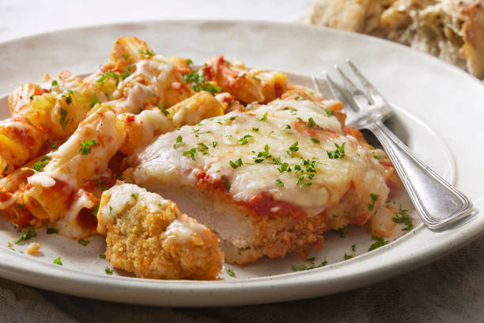

Home
Chicken Parmesan

Description
Chicken Parmesan is a wonderful and filling Italian-Americanized recipe. In this recipe I will be teaching you how to make this dish with minimal oil-frying
and utilizing and air-fryer to finish it off making it a healthier alternative to a typical chicken parmesan recipe. We will also be using chicken thigh in
place of chicken breast. Chicken thigh is a cheaper and fattier cut of chicken meat. But don't worry, fat doesn't mean unhealthy. In fact, fat is a necessary part of
our diet (not to mention fat is delicious so we will get extra falvor, yum). This recipe goes great with garlic bread and a side of spaghettie.
Ingredients
- 1 lb. skinless boneless chicken thigh
- 1 egg, beaten
- 1/2 cup italian breadcrumbs
- 1/2 cup of shredded parmesan cheese
- 3 tbsp. extra virgin olive oil
- 1/4 cup of marinara sauce
Steps
- Pound chicken thighs flat with a meat hammer. This will increase the surface area of the meat allowing for more of the flavor of the breadcrumbs to come through as well as ensure an even cooking temperature.
- Add olive oil to a 10-in. round stainless steel pan.
- Set burner to medium-high heat and wait for oil to come to temperature (the oil is ready when you can add a pinch of breadcrumbs and it starts bubbling)
- Add beaten egg to a bowl. In a separate shallow bowl (such as a glass pie dish) combine breadcrumbs with half of the parmesan cheese.
- Dip chicken into the egg first then into the breadcrumb mixture. Be sure to cover both sides so they are completely covered.
- Place chicken thighs into the pan ensuring some space between the meat (you may need to do this step in batches to get through it all).
- Cook each side for 2-5 minutes or until they have turned golden-brown. Flip with a pair of tongs.
- Preheat airfryer to 360 degrees F.
- Place finished chicken into airfryer and spoon the marinara over the top of the chicken.
- Cook for 10 minutes without flipping. For the last 2 minutes add the other half of the parmesan on top of the marinara to create a layer of cheese topping.
- Serve immediately.